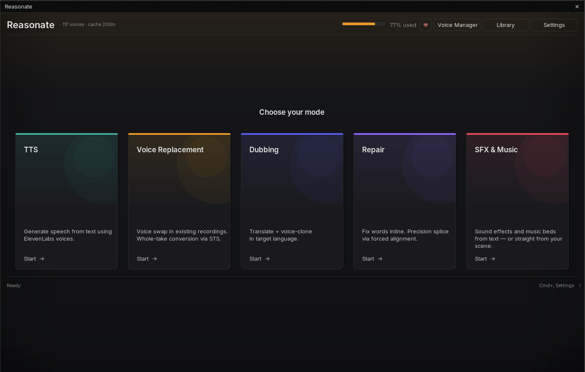

Getting startedQuick start
Reasonate is a ReaScript. It runs inside REAPER, uses your own ElevenLabs account, and stores everything locally. Setup takes about five minutes.
-
Install the requirements
You need REAPER 7.0 or newer, ReaImGui 0.10 or newer and the SWS extension. Install ReaImGui through ReaPack: Extensions → ReaPack → Browse packages, search for "ReaImGui", install. Get SWS from sws-extension.org, then restart REAPER.
SWS powers in-app audio previews - without it every play button falls back to your system media player.
-
Get an ElevenLabs API key
Create an account at elevenlabs.io, then copy an API key from your profile (API Keys section). The free tier works for trying things out; a paid tier gives you more credits and voice slots. Reasonate always shows you an estimated cost before it spends anything.
-
Install Reasonate via ReaPack
Extensions → ReaPack → Import repositories... and paste:
https://raw.githubusercontent.com/b451c/Reasonate/main/index.xmlThen Browse packages, search for "Reasonate", install, and run
Script: reasonate.luafrom the Action List (assign a keyboard shortcut or toolbar button if you like).Manual alternative: download the repository, copy the contents of
scaffold/intoREAPER resource path/Scripts/Reasonate/and loadreasonate.luavia Action List → New action → Load ReaScript. -
Enter your API key
On first launch Reasonate opens Settings automatically. Paste your key, press Test to verify it, then Save & fetch voices. Your voice library loads and the header shows your subscription usage.
The key is stored in REAPER's local settings, never in your project files, and it is never passed on a command line where other apps could see it.
-
Pick a mode and go
A fresh project greets you with the mode picker. Each project remembers its mode; you can switch anytime with the tabs at the top of the window.

How it thinksFive concepts worth 60 seconds
1. Modes
Reasonate is five tools sharing one window. Each mode has its own workflow and its own chapter in this guide:
TTS
Write text, get speech on a track. Single voice or a multi-speaker dialogue with up to 10 voices.
Read the chapter ->Voice Replacement
Swap the voice in an existing recording while keeping the performance. Whole takes, batch friendly.
Read the chapter ->Dubbing
Transcribe, translate and re-voice your material in another language, timed to the original.
Read the chapter ->Repair
Fix a word or two in a finished take. Click words in a transcript, type the correction, splice.
Read the chapter ->SFX & Music
Generate sound effects and music beds from a text prompt, or let AI propose sounds for a scene.
Read the chapter ->2. Non-destructive, always
Reasonate never modifies your source audio. Generated audio lands on separate tracks (like Track [AI] or [Dub ES: name]) or as new takes, linked to the original. Every operation is wrapped in an undo block, so Cmd+Z / Ctrl+Z behaves exactly as you expect.
3. The cache saves you money
Every render is cached on disk, keyed by the exact input (audio, text, voice, settings). Repeat the same operation and Reasonate reuses the file instantly, at zero API cost. Change anything meaningful and it renders fresh. Cache files live next to your project in reasonate_cache/, so they travel with it.
4. Costs are visible before you commit
Anything that costs credits shows an estimate first: the batch dialog in Voice Replacement, the character counter in TTS, the live cost ticker in Dubbing, per-edit pricing in Repair. The header always shows your subscription usage. Details in Tips & Costs.
5. One cast across all modes
Name a speaker once, assign a voice once, and every mode can reuse it. The project's Cast Registry remembers your characters, their descriptions and their voices per language - cloned voices included.
OrientationThe window at a glance
- Header - voice count, cache size, subscription usage bar, the ♥ support button, and quick access to Voice Manager, Library and Settings.
- Mode tabs - switch tools without losing state; each mode keeps its panel exactly as you left it during the session.
- Footer - live activity chips for anything running in the background (renders, translations, recordings) with a retry button when something fails, plus the keyboard shortcuts for the current mode.
| Shortcut | Action |
|---|---|
| Cmd+Enter | Primary action of the current mode (Convert / Generate). Ctrl on Windows and Linux. |
| Cmd+, | Open Settings. |
| Esc | Close the current dialog, or cancel a running batch. |
| Tab | In REAPER: cycle takes on a selected item (native REAPER behavior, handy for variants). |
Where nextSuggested reading order
If you are new, skim Voice Replacement first - it introduces voices, converting and auditioning, which every other chapter builds on. Then jump to whichever mode matches your work. Tips & Costs is worth reading once before your first bigger batch.